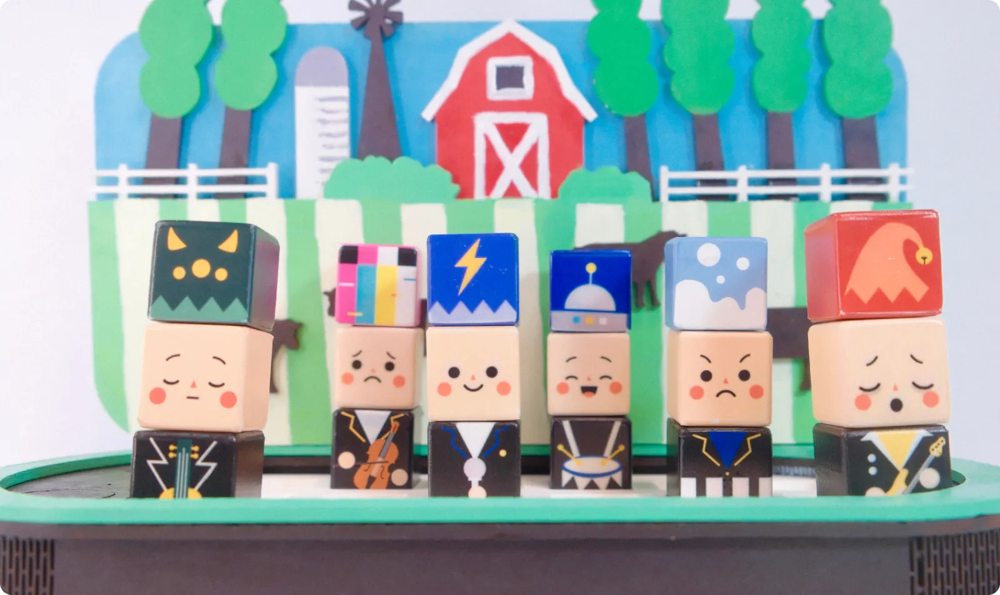
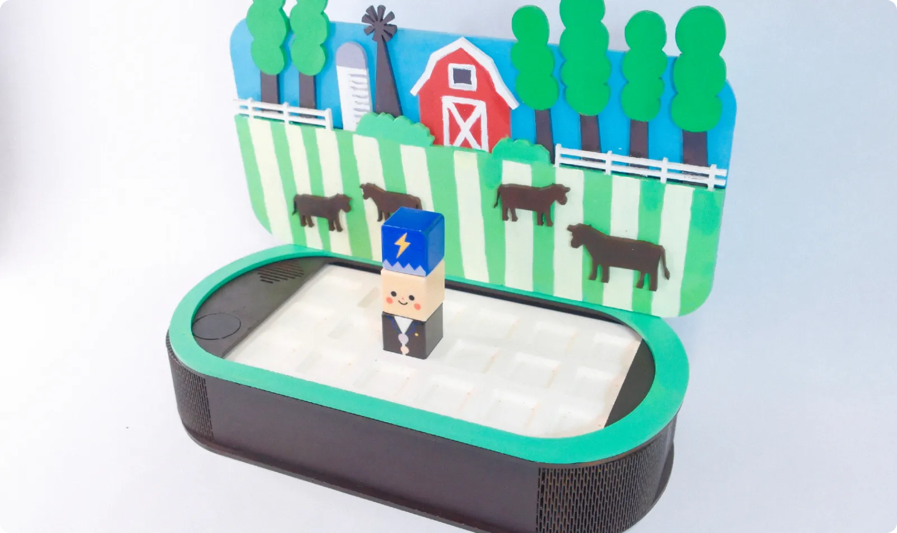
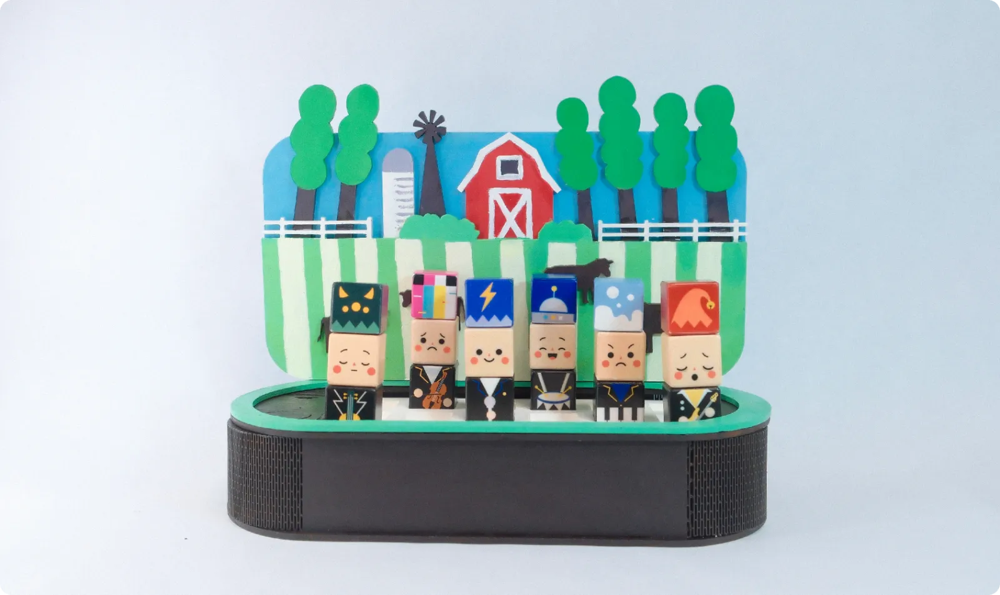
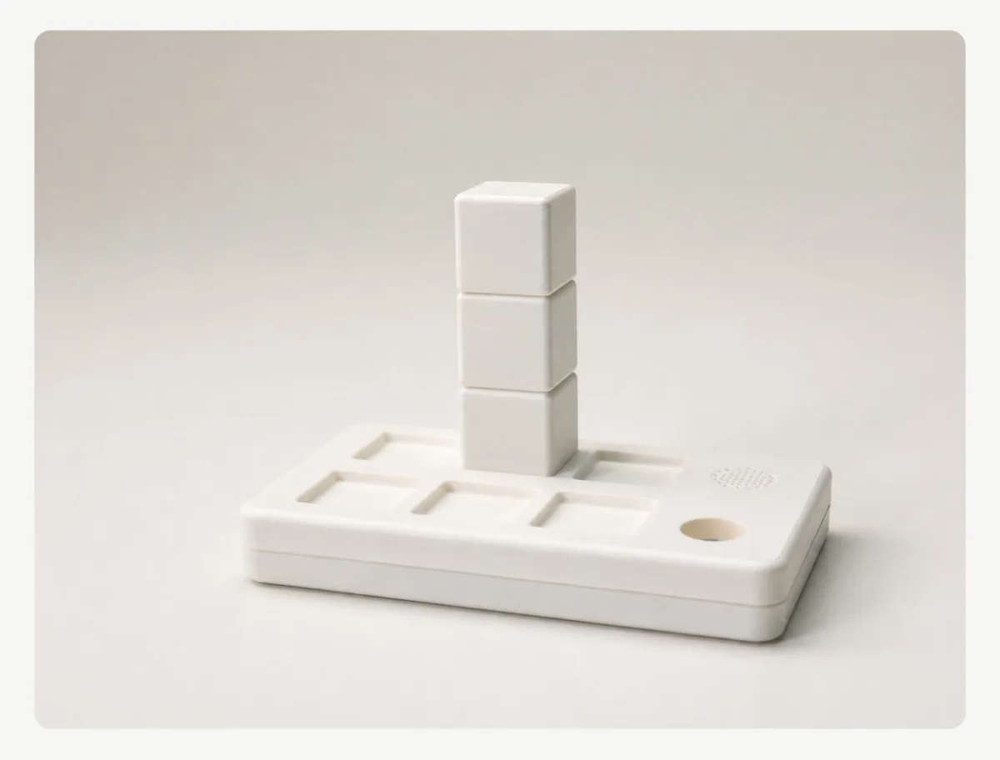
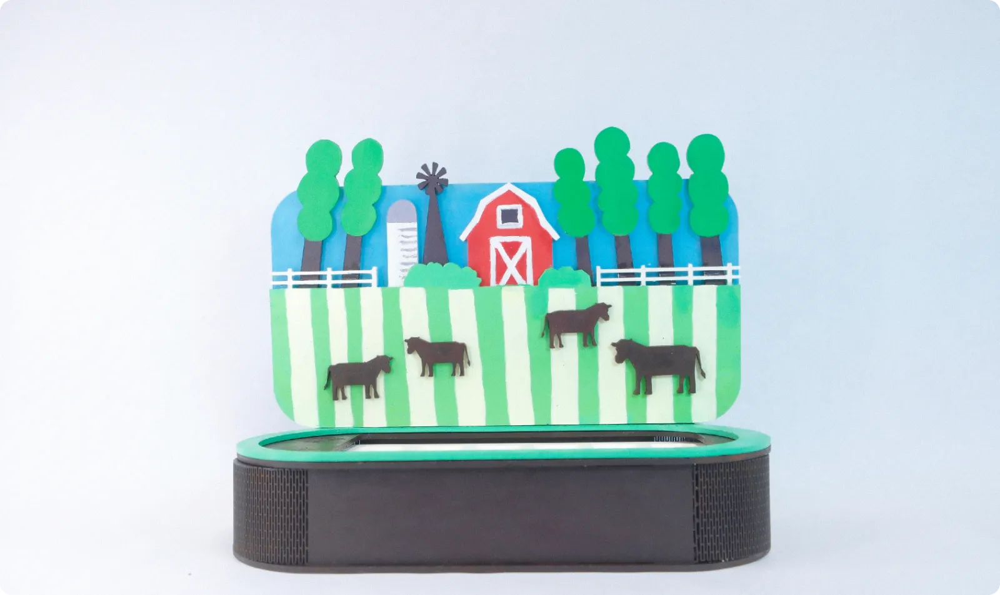
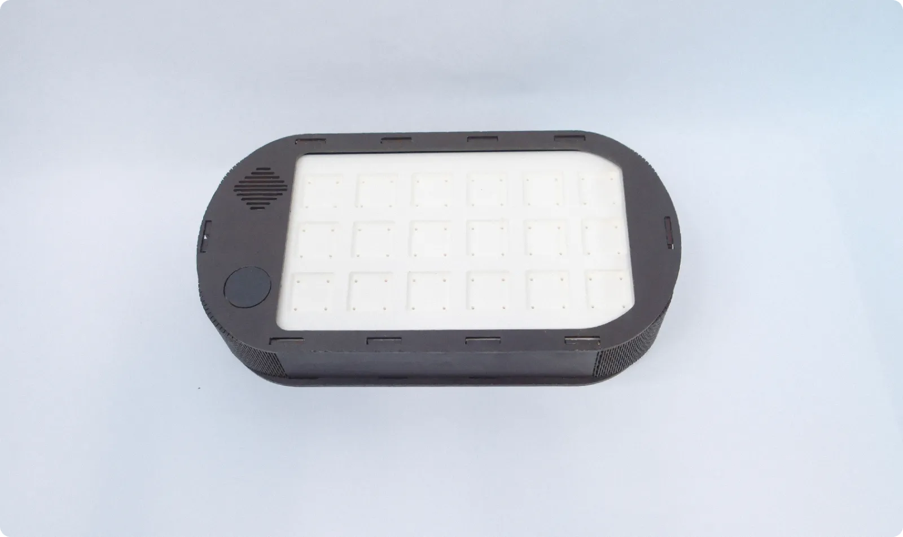
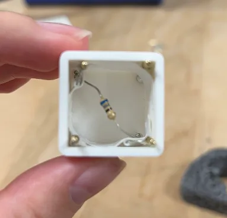
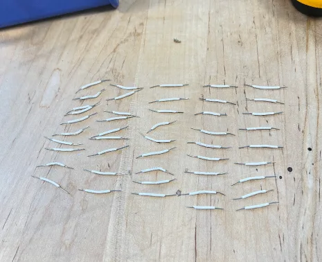
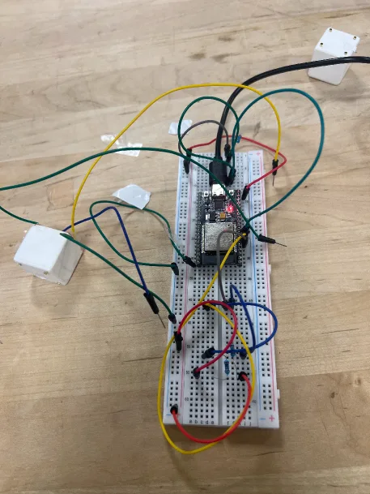

Stack three blocks. Start a band.
SCROLL
Bandy turns music into building blocks. Stack a hat, a face and an outfit to create a band member, and every combination sounds different. Match your band as you wish.
- Course
- IXDS 734 · SCAD · Spring 2026
- Team
- Yutong Gao, Minwei Wu, Qiling Chen
- Built with
- ESP32 · pogo pins · Arduino IDE · Processing · laser cutting
- Category
- Tangible interaction · Toy design



My role
One of three designers, from the block system and character design to the physical stage, the electronics and the vision film.
- Concept & interaction
- Character & block design
- Physical prototyping
- Electronics & code
- Vision film
Vision film
Match your band as you wish.
Starting point
Music is on offer. Children aren’t playing it.
The gap isn’t access. It’s a way in that a three-year-old can simply pick up.
- Touch, don’t read
Every musical choice is a block you can hold.
- Every combination works
Mistakes become surprises.
- Characters, not controls
A face reads as a mood before it reads as a rhythm.

Early form study
How to play
Stack a member. Place it on the grid. Pick a scene.
- ↓Stack = one memberThree blocks make a character: hat, face and outfit.
- →Columns = timeThe base reads left to right, one column after another, then loops.
- ↕Rows = pitchBack row plays high, front row low. Same column, same moment.
- ▣Scene board = genreThe board behind the base sets the style the band plays in.
Build a band member
It remixes itself. Tap a block, or pick one below.
216possible band members from 18 blocks
Play the band
Your turn: put a band on the board.
Every note is made live in your browser. Speakers or headphones work best.
Left to right is time: the six columns play in turn and loop. Members in the same column play together. Rows are pitch: the back row plays high, the front row low. Swap a block: drag one from the tray onto a member, or tap a block, then a new one. Move a member: drag it to another spot. Back row hidden? Point at a back member, or use the grid map above the scene boards.
Scene boards
Same band, a different genre.
The board behind the band sets the genre. An NFC tag inside it tells the base which scene is in, and the same piano player sounds completely different at a jazz club than on a rock stage. Our prototype has the country board; try the others in the band above.


The real prototype: a laser-cut base with tenon-and-mortise joints and a hand-painted, layered country board.
How it works
Look inside.

A resistor in every blockEach block hides a resistor with its own value. One leg goes to a shared ground, the other to a corner pin that maps to its layer: pin 32 for the instrument, 33 for the effect, 34 for the rhythm.

Pogo pinsSpring-loaded pins on the top and bottom faces are wired through, so three blocks are read at once just by stacking.

Inside the baseThe ESP32 reads the three voltages, matches them to calibrated ranges and sends the combo, like “bass,laughing,elf”, to Processing, which loops the right sound. In our MVP the laptop plays the sound; the speaker and NFC reader belong to the final design.
An NFC tag in each board tells the base which genre is in, so it can set the base rhythm and melody the band plays over.
Hover over the blocks, the base or the board to look inside. Left alone, it walks you through.
A working MVP
Before painting anything, we proved the core loop: stack blocks on the breadboard rig, and the laptop recognises them and plays the matching sound in real time, with a debounce so a wobbly contact doesn’t cut the music.
Next project
Fitfido
View case study